Cigar Review: My Father - Flor De Las Antillas Robusto
This is my first taste of New World cigar! It's an ok cigar in my opinion. I'm still pretty new to the cigar world, but I think I prefer Cubans for now.
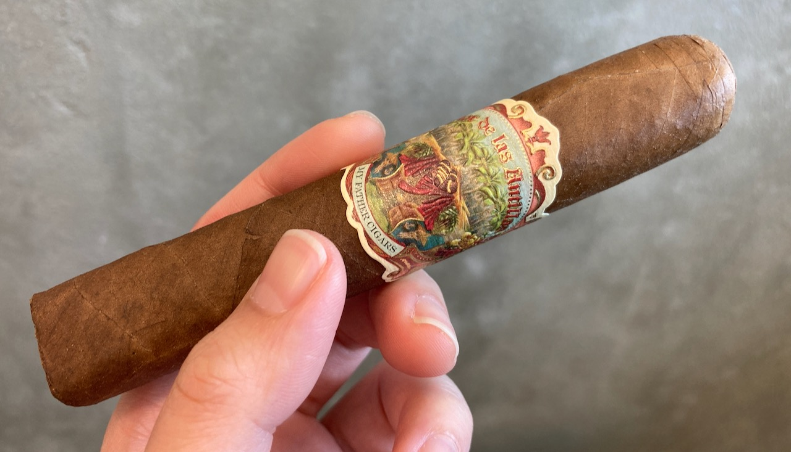
This is not the first time that I've seen cigar in plastic wrapper. I think that might just be a U.S. thing, but I don't particular mind it.
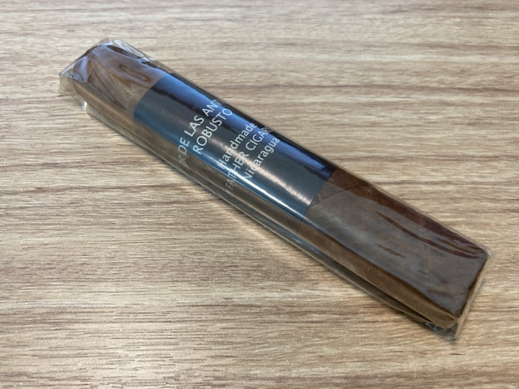 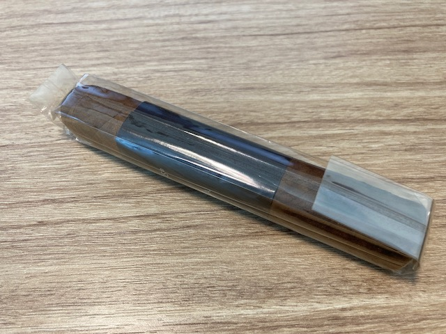 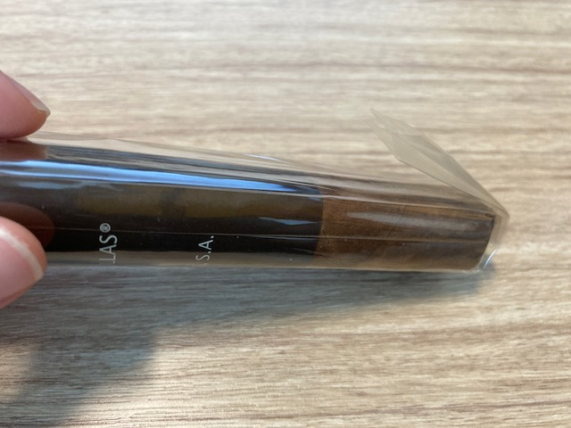
The cigar itself is beautiful. I love the dark brown colour of the wrapper. It's also presented with this rectangle-looking press, so it doesn't roll of the table if I place it down. I think this is a pretty good idea! 😆 I am not a huge fan of the band though. I think it looks a bit dull and plain. 😶
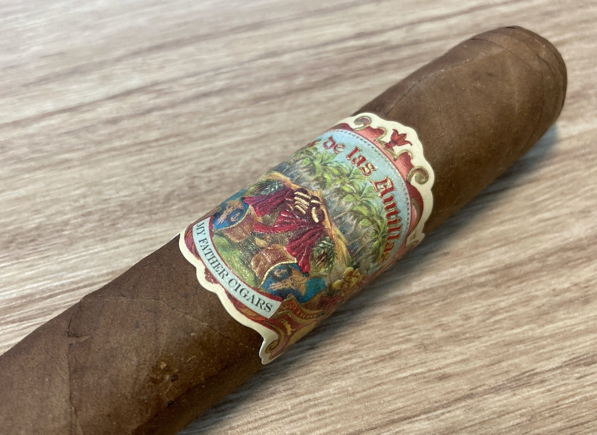 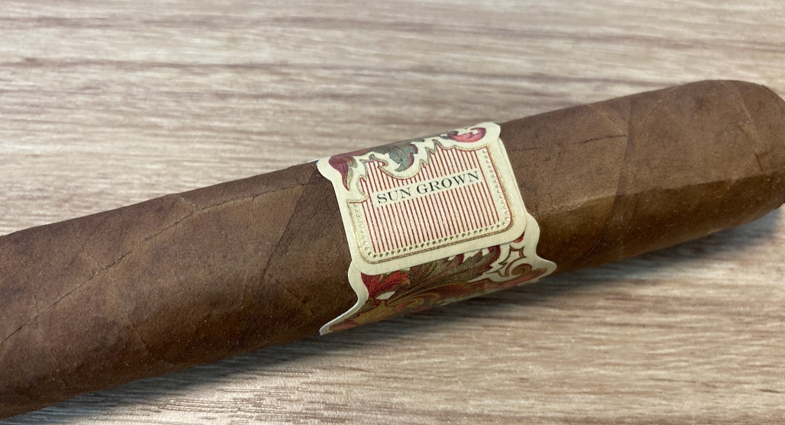 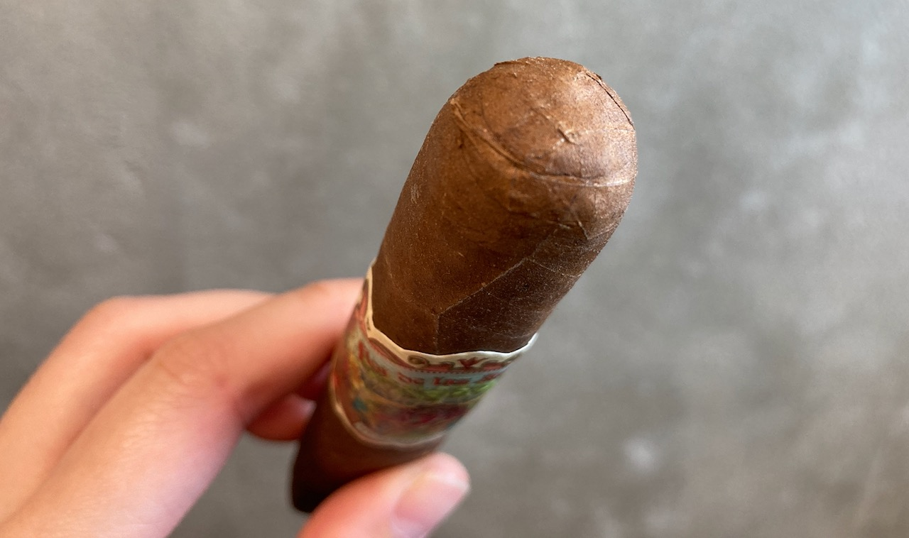 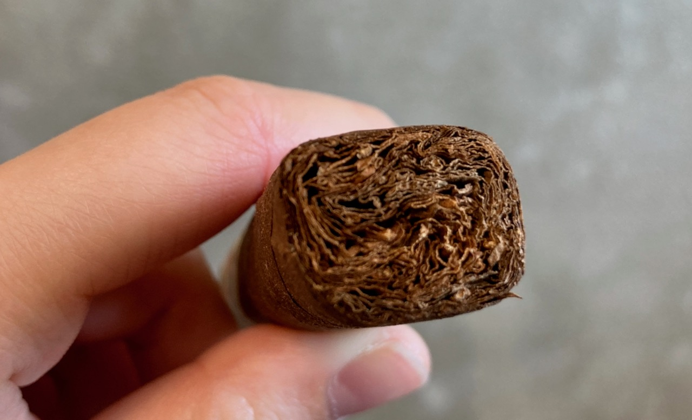 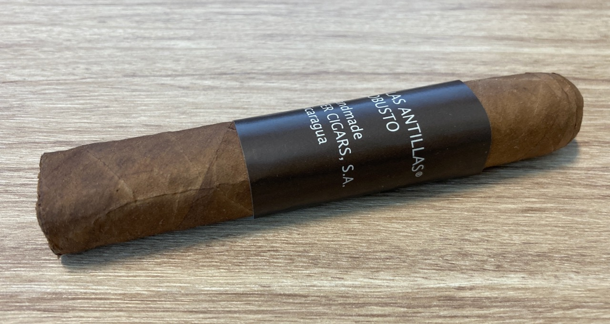 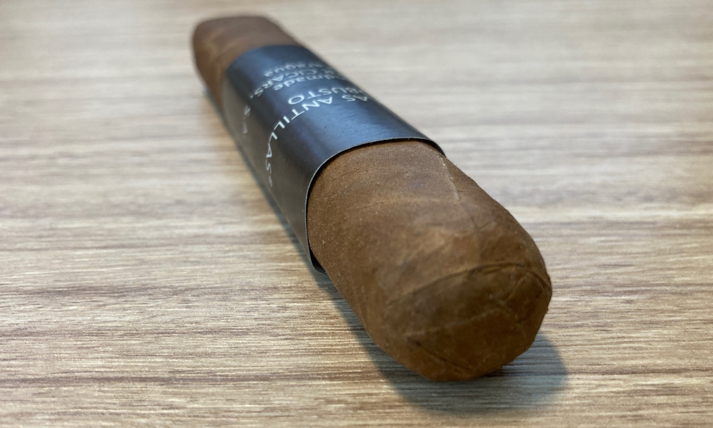
Anyways, before I go on and talk about the flavours, I am proud to say that I was able to cut off just the cap with my guillotine cutter for the first time! Proud of my cut!!
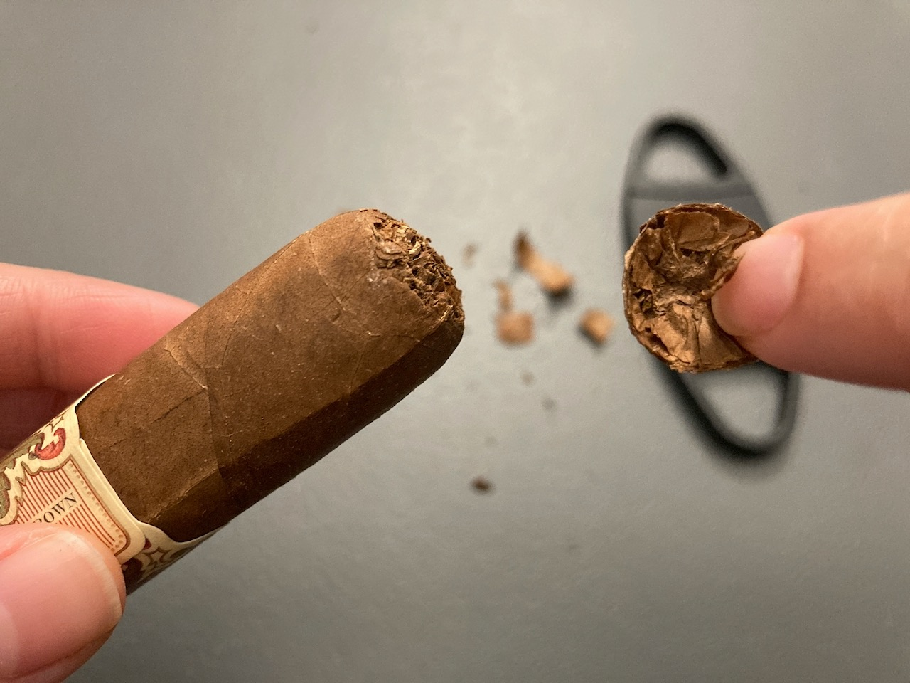 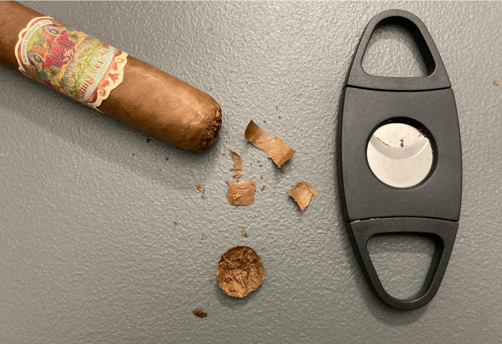
When I was doing a cold draw, I tasted strong nutty and almost cinnamon flavour. When I light it up and take the first few draws, I tasted spice. It was a smooth spice. It's not that type of hot spice that will choke you or burn you. It's weird but smooth spice is really the best term that I could come up with what I experienced. 🌬
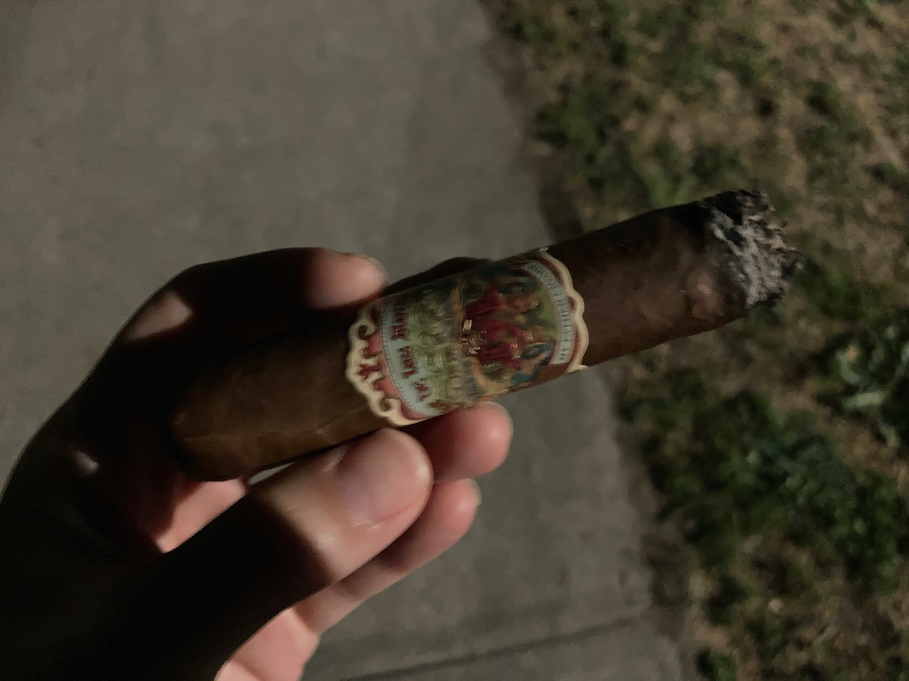
Towards the mid-end sections, I couldn't really taste much other than maybe slight hint of floral woody type of sweetness. Most of it just tobacco burn for me. I couldn't quite finish the cigar till the end because the smoke kept going into my eyes and nose whenever I'm trying to take a draw. I ended the cigar quite early as I wasn't tasting any other interesting flavours.
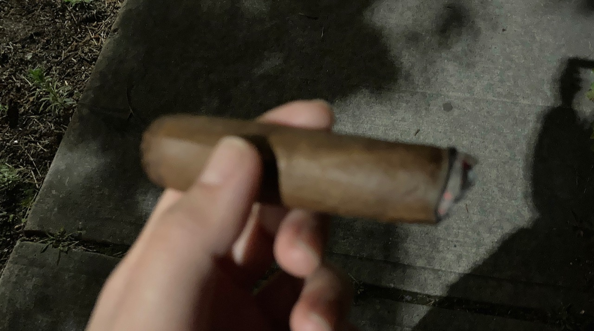
It was a fine cigar. It's not bad, but I wouldn't actively go back for another one. I only picked this one up because this is the only brand that I recognized from the cigar shop that I went. They only have New World cigars and I thought to give it a try.
The smoke time for me was about 50 minutes. I was walking around the neighbourhood in quite a calm evening (midnight-ish). Not much wind and the BiC lighter can surprisingly keep my cigar lit. The cigar is not the best, but the session was good. 🌃
| Where did I get it? | New Wave Convenience and Smoke Shop |
| Price | About $26 |
| Date of Acquistion | June 22, 2023 |
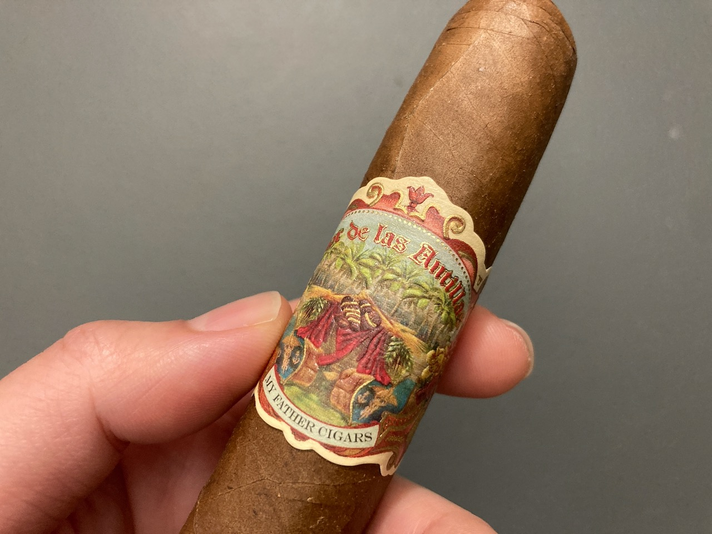
Bonus short story
Midway during my walk, the cigar went out. I flicked my BiC 😝 and instantly I felt like someone's watching. Because
it's the middle of the night, BiC flame was super bright. However, since it was not a threatening type of eyes that
I felt, I decided to ignore it. Lit the cigar, took a few puffs, then all the sudden! I saw a police car pass me up
at a good speed. I guess the feeling of being watched was a cop making sure that I wasn't playing with fire or
burning anything. It was an uneasy feeling, but all ended good. 😅
Thank you for reading till the end! If you enjoy this post, please consider supporting this website and allow me to continue to share my cigar journey with you. Thank you and have a wonderful day!! 👏